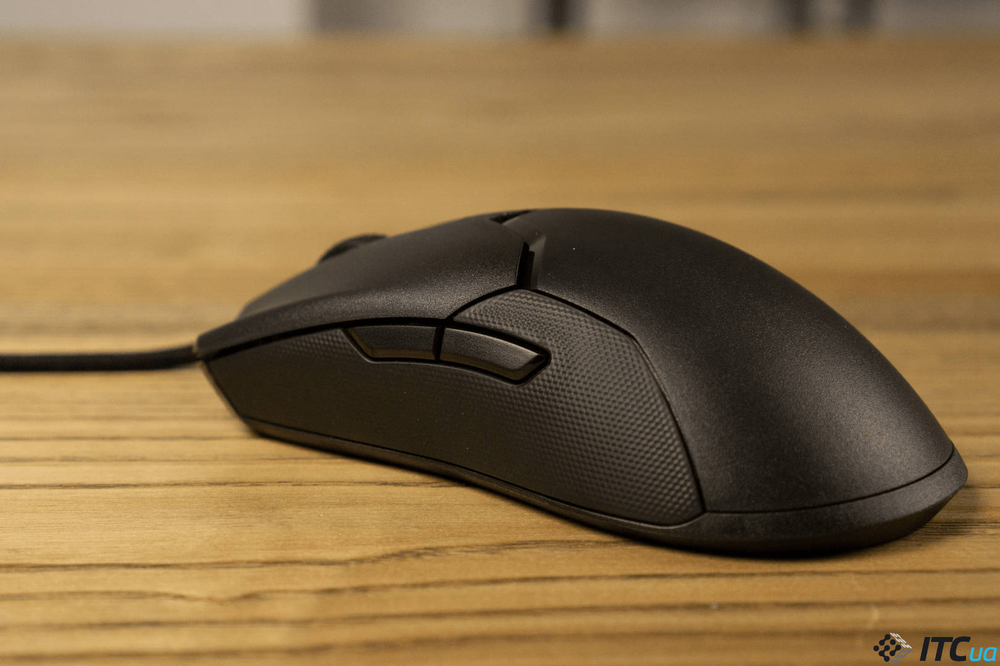
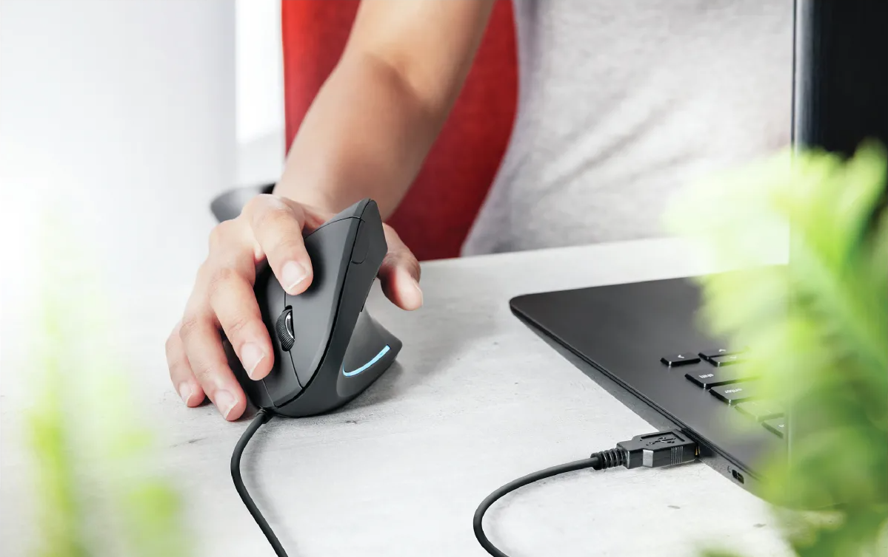
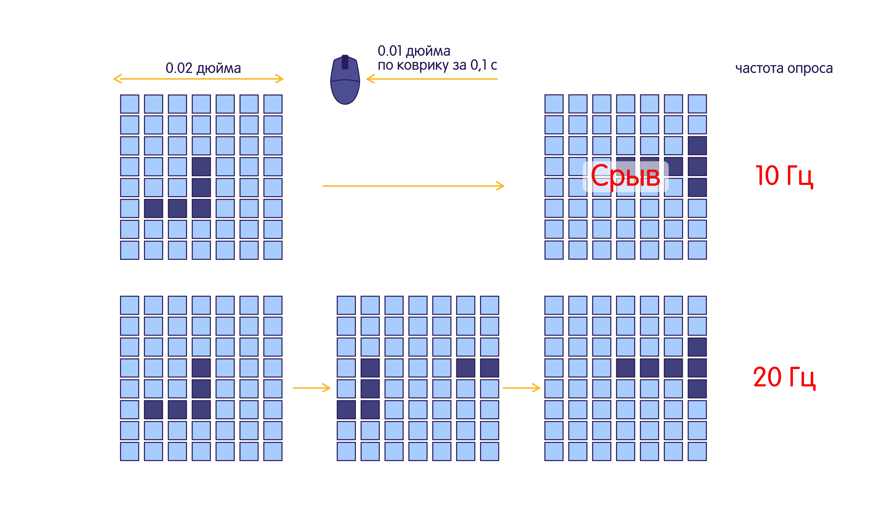

Компьютерная мышь - это устройство для управления курсором и отдачи различных команд компьютеру. Некоторые люди воспринимают мышь как расходный материал и не задумываются о том, какую мышь выбрать. Но если вы хотите подобрать для себя мышку, которая будет подходить под ваши запросы, то данная статья будет для вас полезна.
Самые бюджетные и распространённые модели — это оптические светодиодные мыши. Они долговечные, достаточно быстрые для выполнения типичных офисных и домашних задач. Однако точность работы ниже лазерных, а без коврика курсор может плохо реагировать на движения.
Также существуют лазерные мыши. Эти мышки отличаются от оптических тем, что вместо светодиода в них используется лазер. На современном этапе развития лазерные мышки являются наиболее точными и обеспечивают самое высокое значение DPI. Также данные мыши могут спокойно работать на любых покрытиях.
Форма и размер - самые субъективные и важные параметры при подборе мыши. Руки у всех разные и подобрать мышку под конкретную руку бывает очень трудно. Для того чтобы определиться с формой мыши необходимо понять, какой у вас хват мыши.
Основные варианты хватов мыши:
После того, как вы определились какой хват используем, можем перейти к формам мышей. Сейчас на рынке существует множество мышек с нестандартной формой, но основными являются симметричная мышь и эргономичная мышь.
Симметричная мышь подходит для тех, у кого пальцевый и когтевой хват. Симметричная мышь является универсальным вариантом. Также у данных мышек боковые кнопки могут располагаться, как справа так и слева.
Эргономичная мышь имеет более анатомическую форму. Чаще всего это заметный подъем в области указательного пальца и скос в правую сторону. Наиболее подходящий хват — ладонный.
Dpi - разрешение сенсора, сколько точек на один дюйм регистрирует сенсор. Чем выше значение выставлено, тем "чувствительнее" к движениям мышь. Современные сенсоры ушли в отрыв, 16000-19000 или даже 20000 Dpi, но если вы рассматриваете мышку для работы в офисных программах, то на этот параметр вы можете не смотреть.
Чтобы отследить перемещение манипулятора, сенсор должен делать снимки с некоторой частотой. Если эта частота будет слишком низкой, может получиться так, что на очередном кадре не будет ни одного элемента предыдущего кадра. В этом случае электроника мыши не сможет определить ни величину, ни направление перемещения. Это явление называется срывом. Указатель при срыве либо замирает на месте, либо непредсказуемо «прыгает» в произвольную точку экрана. Данное явление может сильно испортить матч геймерам. Для того чтобы понять, будет ли у вас срывать сенсор необходимо обратить внимание на частоту опроса и скорость перемещения мыши. Чем выше скорость перемещения указателя и чем ниже частота опроса, тем выше вероятность срыва. Высокая скорость перемещения характерна, опять же, для игр. Так что этот параметр является одним из важнейших для геймеров.
Мышь может подключаться к компьютеру проводом, по радиоканалу или по Bluetooth. Мыши, которые подключаются про помощи провода раньше имели минимальную задержку, но в последние время беспроводные мыши имеют очень маленькую задержку, и проводные мышки стали устаревать.